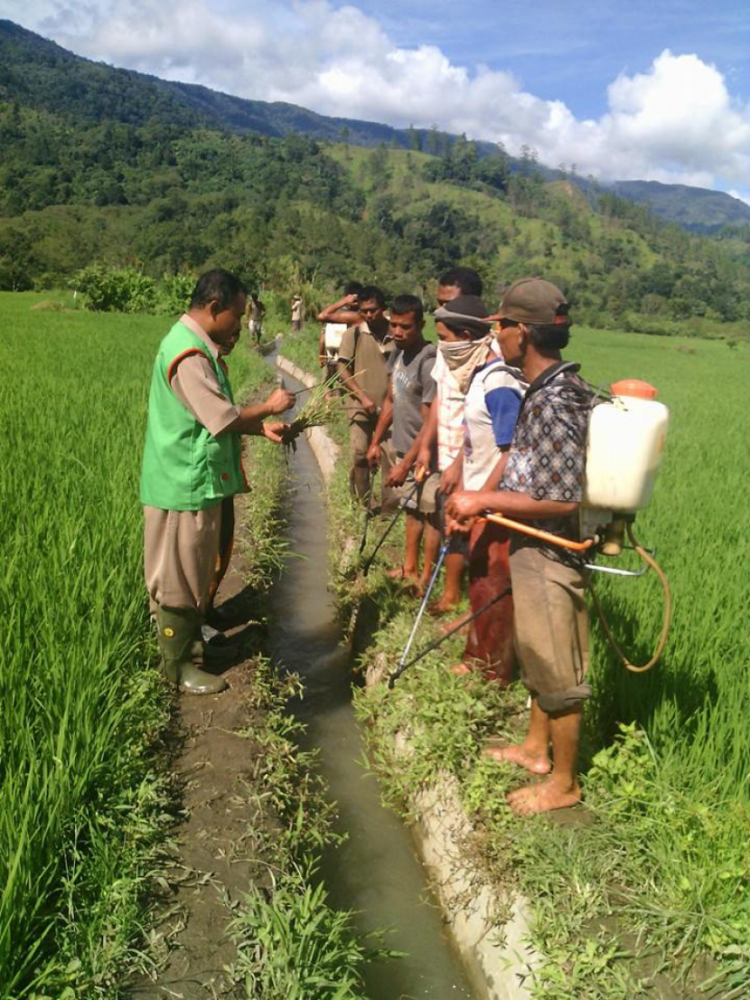

Mengapa Sistem WebGIS Ini Dibutuhkan?
Dukungan untuk produksi tembakau
Sistem ini dirancang khusus untuk mendukung produksi tembakau yang lebih efisien, tepat lokasi, dan berbasis data
Spesifik untuk Komoditas Tembakau
Sistem ini dirancang khusus untuk mendukung produksi tembakau, bukan sekadar aplikasi pemetaan umum
Berbasis Data Spasial Resmi
Menggunakan data shapefile dari sumber terpercaya seperti DEM, batas administrasi, dan penggunaan lahan
Mendukung Pemerintah & Petani
Memberikan dasar kuat untuk penyuluhan, perencanaan tanam, dan pengambilan keputusan berbasis wilayah